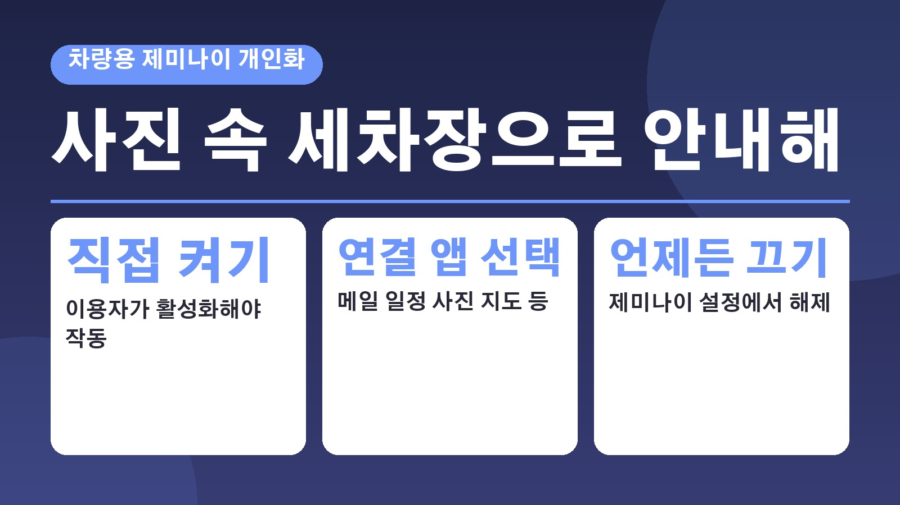
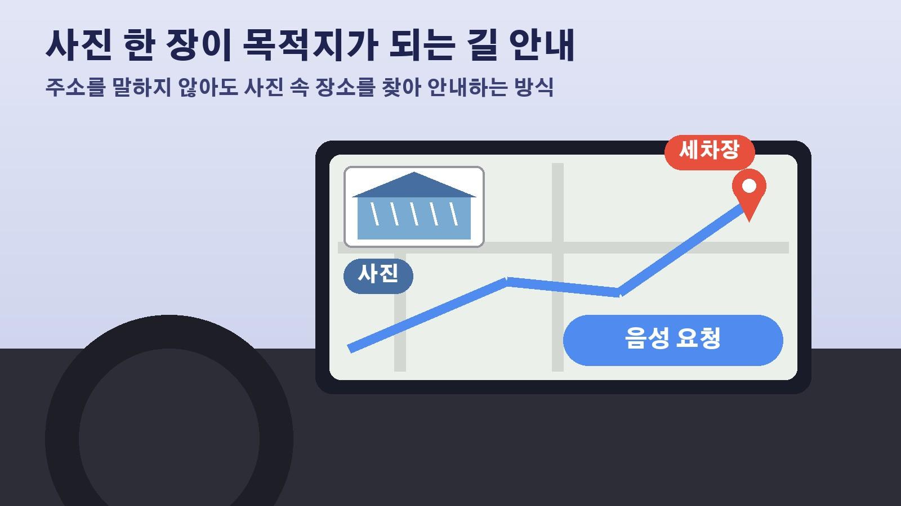

사진 속 세차장으로 안내해 한마디면 길을 찾는 차, 구글 제미나이 개인화는 직접 켜야 작동

마음에 들었던 세차장이 있는데 이름도 주소도 기억이 안 날 때가 있죠. 사진첩을 뒤져 간판을 찾고, 다시 지도 앱에 입력하는 수고가 꽤 번거로운데요. AI타임스가 10월 23일 전한 소식에 따르면 구글이 차량용 인공지능 비서 제미나이에 이런 수고를 덜어 주는 개인 맞춤 기능을 넣기 시작했습니다. 기사에 예시로 나온 문장이 바로 지난주 찍은 사진 속 세차장으로 안내해 달라는 요청이었어요. 어떤 방식인지, 무엇을 켜고 꺼야 하는지 정리해 봤습니다.
사진 한 장이 목적지가 되는 방식
새 기능의 이름은 퍼스널 인텔리전스, 우리말로 하면 개인 맞춤 지능 정도입니다. 운전자가 주소나 장소 이름을 말하지 않아도 이메일과 일정, 사진, 앞서 나눈 대화를 바탕으로 목적지를 찾아 주는 게 핵심이에요. 지난주 찍은 사진 속 세차장으로 안내해 달라고 하면 사진을 활용해 그 장소를 찾고, 예약한 병원으로 가자고 하면 일정에서 목적지를 찾는 식입니다. 전날 대화했던 커피숍으로 길을 안내하거나, 식당을 찾을 때 평소 식습관과 선호를 반영하는 예도 함께 소개됐어요.
휴대전화 연결형과 차량 내장형, 두 갈래
차에서 제미나이를 쓰는 길은 두 가지입니다. 하나는 휴대전화를 차량 화면에 연결해 쓰는 안드로이드 오토로, 휴대전화에서 돌아가는 길 안내와 음악, 메시지를 차 화면과 음성으로 이용하는 방식이에요. 다른 하나는 지도와 음성 비서 같은 구글 소프트웨어가 차량 화면 장치에 아예 들어가 있는 구글 빌트인입니다. 구글은 현지 시각 20일 공식 블로그에서 이 기능을 안드로이드 오토에 차례로 적용하고, 구글 빌트인 차량에는 앞으로 몇 달에 걸쳐 넣겠다고 밝혔습니다.
어떤 앱의 정보를 가져다 쓰나
이 기능은 이용자가 허락한 지메일, 구글 캘린더, 구글 포토, 지도, 유튜브, 검색 정보를 연결합니다. 질문에 필요한 내용을 찾아 여러 곳의 정보를 함께 분석하기 때문에 운전자가 세부 내용을 되풀이해 설명할 필요가 줄어든다는 설명이에요. 예를 들어 공항으로 가는 길에 탑승구 위치와 제시간 출발 여부를 물으면 예약 확인 메일과 운항 정보를 함께 살펴 답해 준다고 합니다.

직접 켜야 하고 언제든 끌 수 있다
가장 눈여겨볼 부분은 이 기능이 저절로 켜지지 않는다는 점입니다. 이용자가 직접 활성화해야 하고, 휴대전화 제미나이 앱에서 이미 켜 두었다면 안드로이드 오토에도 그 설정이 그대로 이어져요. 어떤 앱을 연결할지는 이용자가 고를 수 있고, 제미나이 설정에서 언제든 끌 수 있습니다. 구글 빌트인 차량에서는 휴대전화를 연결한 채 탔을 때만 개인 맞춤 답변이 나온다고 해요.
꺼 둬도 쓸 수 있는 기능
개인 정보를 연결하는 게 내키지 않는 분도 있을 텐데요. 이 기능을 쓰지 않아도 길 안내와 음악 재생, 전화, 일반 질문 같은 기본 기능은 그대로 쓸 수 있다고 합니다. 사진첩 속 세차장을 말 한마디로 찾아가는 편리함과 내 메일과 사진을 연결하는 부담 사이에서, 켤지 말지는 각자 고르면 되는 구조인 셈입니다. 우리나라에서 언제부터 쓸 수 있는지는 기사에 나와 있지 않아서, 쓰고 계신 휴대전화와 차량의 업데이트 안내를 확인해 보시면 좋겠습니다.
참고한 기사: AI타임스 지난주 세차장으로 안내해, 구글 차량용 제미나이에 개인화 기능 도입 2026년 10월 23일
태그
세차장 세차장찾기 제미나이 안드로이드오토 구글빌트인 차량인공지능 길안내 퍼스널인텔리전스 구글포토 운전자편의